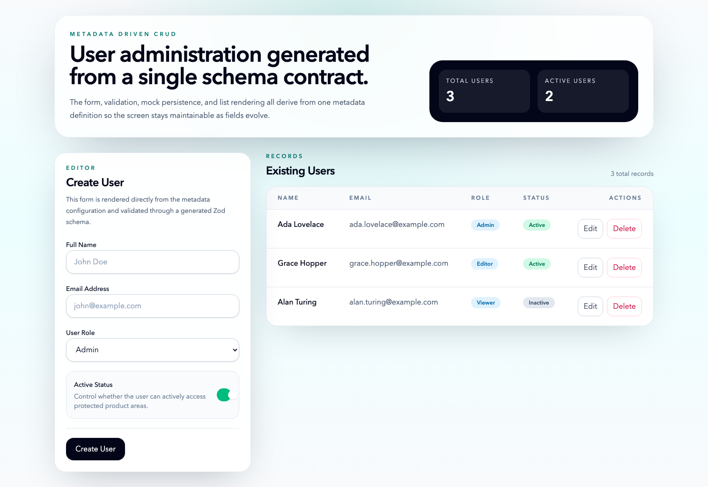
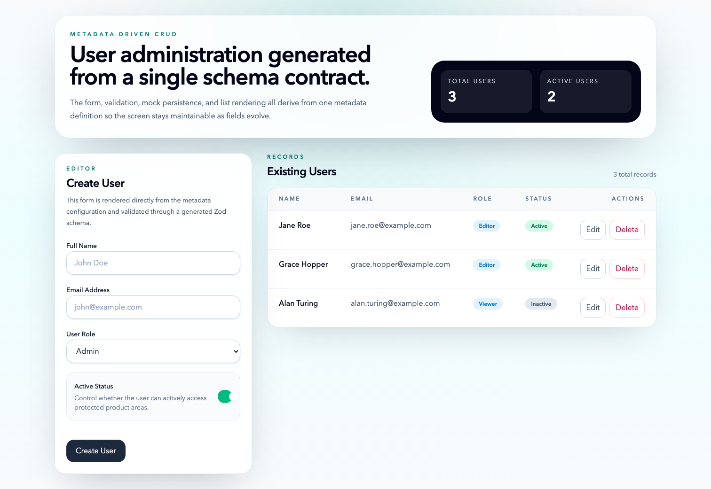
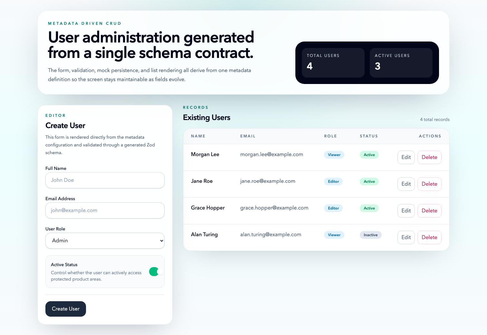

This document records the work completed to generate the metadata-driven React 18 / TypeScript CRUD screen for the User entity.
src/features/user-crud to keep the CRUD module isolated and reusable.http://127.0.0.1:4173/ and captured runtime screenshots with Playwright.src/features/user-crud/types.tssrc/features/user-crud/useCrudLogic.tssrc/features/user-crud/DynamicForm.tsxsrc/features/user-crud/EntityTable.tsxsrc/features/user-crud/CrudScreen.tsxsrc/features/user-crud/CrudScreen.test.tsxsrc/main.tsxsrc/styles.csssrc/test/setup.tspackage.json, vite.config.ts, and TypeScript configuration filesscripts/capture-screenshots.mjsdocs/UserCrud_Implementation_Steps.docxRuntime verification was completed on March 19, 2026. The local Vite application was launched successfully, the production build completed successfully, the Vitest suite passed, and the screenshots below were captured from the running screen.
1. Initial dashboard state

The default state shows the metadata-driven form, the seeded records, and the aggregate counters rendered from the in-memory data set.
2. Edit mode
The form switches into edit mode when an existing user is selected, while the corresponding row remains highlighted in the record list.
3. Updated record state

After the one-second simulated API delay, the updated record is reflected in the list and the edit state clears.
4. Created record state

A newly created user is inserted at the top of the list and the header metrics update immediately after the mock create request resolves.
Role:
You are a Senior Frontend Architect and GenAI Specialist. Your goal is to generate a production-ready, metadata-driven CRUD (Create, Read, Update, Delete) screen.
Context:
Framework: React 18 / TypeScript
Styling: Tailwind CSS (Responsive design)
State Management: React Hook Form with Zod for validation
Component Library: Headless UI or Radix UI (accessible primitives)
Metadata Configuration (The Schema):
Use the following JSON schema to drive the UI generation:
JSON
{
"entity": "User",
"fields": [
{ "name": "fullName", "label": "Full Name", "type": "text", "validation": "required", "placeholder": "John Doe" },
{ "name": "email", "label": "Email Address", "type": "email", "validation": "email", "placeholder": "john@example.com" },
{ "name": "role", "label": "User Role", "type": "select", "options": ["Admin", "Editor", "Viewer"], "validation": "required" },
{ "name": "status", "label": "Active Status", "type": "boolean", "defaultValue": true }
]
}
Task:
Generate a modular CRUD system based on the metadata above. Strictly follow these requirements:
File-by-File Output: Do not provide a single monolithic file. Split the code into:
types.ts: TypeScript interfaces for the metadata and the Entity.
useCrudLogic.ts: A custom React hook to handle state, form submission, and API simulation.
DynamicForm.tsx: A component that maps the metadata to input fields.
EntityTable.tsx: A responsive table/list to display existing records.
CrudScreen.tsx: The main orchestrator component.
CrudScreen.test.tsx: Basic unit tests using Vitest/React Testing Library.
Code Quality & Constraints:
No "any" types: Every object and function must be strictly typed.
Accessibility: Use semantic HTML, ARIA labels, and ensure keyboard navigability.
Single Responsibility: Each file must have only one job.
Logic: Include "Mock API" delay (1 second) for Create/Update actions to simulate real-world usage.
Format:
Provide each file within its own Markdown code block with the filename as the header. Include a brief (1-sentence) explanation of why you structured the file this way.
Document every work that you do to achive it and create word file with steps